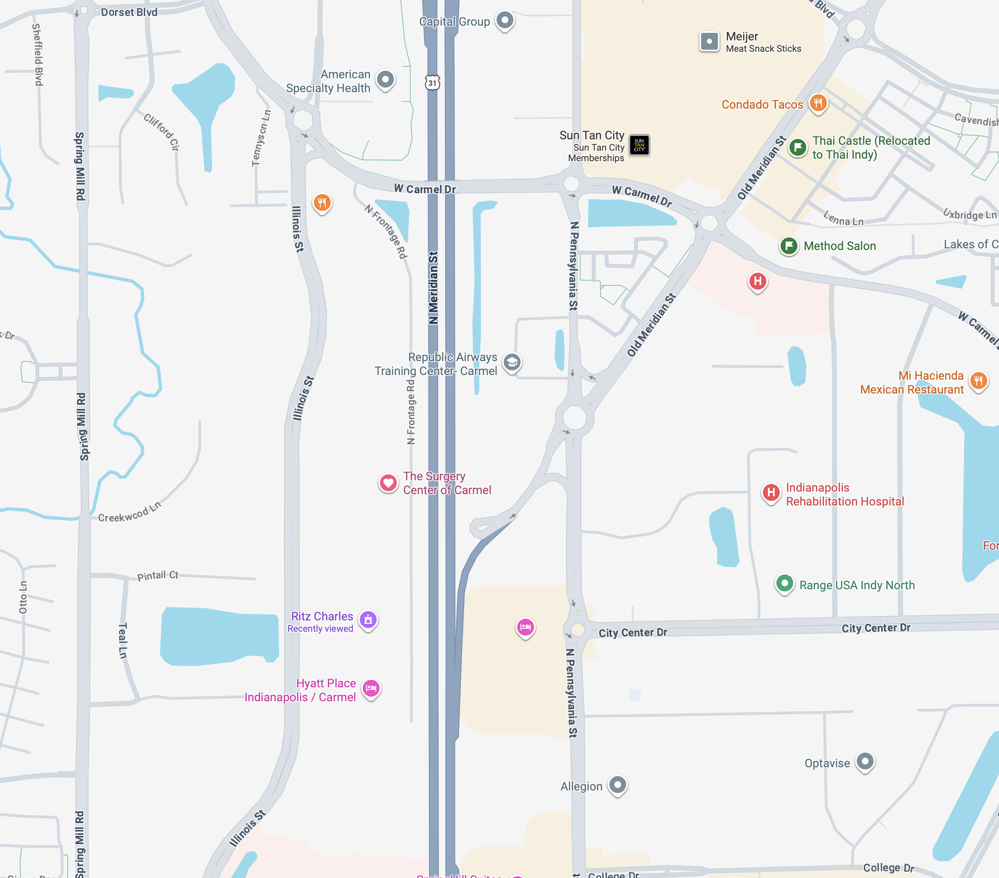

Surgery Center of Carmel
Cómo Llegar

El Surgery Center of Carmel está en el North Meridian Medical Pavilion — segundo edificio desde el sur en Illinois St., aproximadamente ½ milla pasando IU North Hospital.

Salga de US-31 en 116th St., tome el redondel hacia Illinois St., pase IU North Hospital y luego gire a la derecha hacia North Meridian Medical Pavilion.
Tome US-31 / Meridian St. hacia el sur. Tome la primera DERECHA en 116th St. (IU North Hospital queda en la esquina noroeste.) Tome la primera DERECHA en el redondel hacia Illinois St. Pase IU North Hospital aproximadamente ½ milla y gire a la DERECHA hacia North Meridian Medical Pavilion. El Surgery Center está en el edificio a la derecha (12188-A, Suite 150).
Tome US-31 / Meridian St. hacia el norte. Tome la primera IZQUIERDA en 116th St. (IU North Hospital queda en la esquina noroeste.) Tome la primera DERECHA en el redondel hacia Illinois St. Pase IU North Hospital aproximadamente ½ milla y gire a la DERECHA hacia North Meridian Medical Pavilion. El Surgery Center está en el edificio a la derecha (12188-A, Suite 150).
Tome I-465 hasta la Salida 31 / US-31N / Meridian St. hacia el norte. Tome la primera IZQUIERDA en 116th St. (IU North Hospital queda en la esquina noroeste.) Tome la primera DERECHA en el redondel hacia Illinois St. Pase IU North Hospital aproximadamente ½ milla y gire a la DERECHA hacia North Meridian Medical Pavilion. El Surgery Center está en el edificio a la derecha (12188-A, Suite 150).
Si se pierde o llega tarde, llame directamente al Surgery Center: (317) 569-8250. Para otras preguntas sobre el procedimiento de su niño, llame a nuestra oficina al (317) 338-9450.